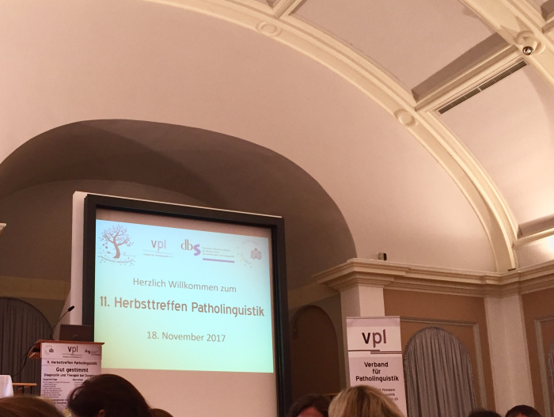
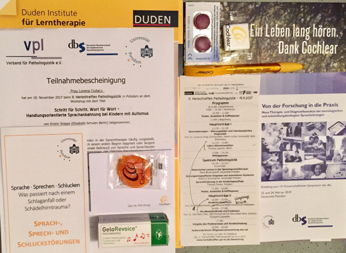

Last Saturday 18th November I attended again the Autumn Meeting of Patholinguistics in Potsdam, in a wonderful new location Am Neuen Palais. The theme of this edition was “Diagnosis and treatment of dysphonia” (also known as hoarseness), a condition of the vocal chords or the larynx which makes the voice sound breathy, strained, raspy, or lower in volume or pitch.

Talks
As I’ve learned from the keynote lecture of Susanne Voigt-Zimmermann (who btw had the terrible idea of “warming up our vocal chords” before her talk by making us stand up and sing Bunt sind schon die Wälder…), there is a triad of symptoms of dysphonia:
- changes in voice timbre,
- limited voice performance,
- discomfort when speaking.
The causes of dysphonia are of two types:
- organic (e.g. inflammation, polyps, cysts, nodules)
- functional (e.g. poor muscles, stress, vocal strain if you sing/talk for a long time or cheer too enthusiastically).
You may have dysphonia and not even be aware of it. To find out, you’d need a laryngoscopy, which is a procedure performed by an otolaryngologist or a speech-language pathologist to visualize the vibration and closure of your vocal fold and assess the damage.
In most cases, dysphonia can be treated with voice therapy or surgery, though it’s more difficult to diagnose and treat in children, because the vocal chords are still developing and voices are “growing up” as well. Though it’s unhealthy, a hoarse voice could play well for artistic purposes, just listen to Tom Waits or Asaf Avidan or that suspenseful voice of movie trailers.
Workshop
The most insightful part, and actually the main reason I attended the Meeting, was the workshop Language initiation in children with autism, held by the speech-language therapist Kristin Snippe. We started by writing on post-its keywords for “typically autistic” language, then she discussed and illustrated them with examples from her practice.
One of the earliest indicators of ASD is delayed language development, as children may say the first words after the age of 4-5. They usually speak in short and simple sentences limited to the basic subject-object-verb structure, and may reverse the 1st and 2nd pronouns (I/me, you) or refer to themselves in the 2nd person (e.g. You want juice. instead of I want juice.). After the initial stage of language acquisition, it’s quite common for language development to stagnate or regress.
Another common feature is echolalia, a stereotypic behavior when the child repeats what he hears, either immediately (e.g. Dad asks Do you want more rice? and the child says Do you want more rice.) or delayed (e.g. the child memorizes a question/sentence/conversation and repeats it later or on another occasion). For example, a parent complained that she couldn’t speak on the phone in the presence of her autistic son because he would repeat the entire conversation afterwards.
It may sound annoying, but echolalia can serve many different functions: learning by imitation, mapping questions to situations (e.g. Are you hungry? Enjoy your meal! for dinner), affirmative answer to a question, establish contact with the interlocutor by repeating her words, time to process the interlocutor’s words before replying, or self-stimulating behavior because certain words sound funny/interesting.
I learned about three therapeutical approaches for initiating communication in children with autism:
- Behavioral (Verbal Behavior Therapy, Applied Behavioral Therapy): The child is taught the meaning and use of words, for example to say water when she sees different bottles of water but also when she is thirsty. The therapy is structures, with a set of tasks or activities, and the therapist uses prompts, repetition, rewards, and reinforcement in teaching.
- Incidental Teaching: The child is let to initiate interaction and the therapist plays along. It takes place in the natural environment, it’s unstructured, but requires creativity and spontaneity for the therapist to create “teachable moments” with what’s at hand. For example, a boy in Ms. Snippe’s therapy was carrying objects from one room to another, uninterested in other activities, so she stepped in his “game” and started carrying toys as well, but stopped repeatedly along the way to indicate that she is tired, so that the boy would push her or point to the room.
- Picture Exchange Communication System (PECS): The child communicates using picture cards of objects, foods, places etc. For example, the child would hand you a picture of a glass of water to “say” that he’s thirsty. Gradually, it’s possible to combine picture and verb cards to make sentences. For example, to say I want to go with dad in the park, the child would arrange cards with the verbs want and go and pictures of his dad and a park.
Children with autism/Asperger’s also have difficulties with pragmatics and non-verbal communication (e.g. gestures, facial expressions, tone of voice, turn-taking, irony/sarcasm, assumptions, allusions, eye contact). These can be trained, for example by simulating social situations or analyzing the non-verbal communication in stories/movies.
Poster session
In the poster session I learned about ongoing research on dysphagia, working memory in patients with aphasia, and therapy for dysprosody in patients with apraxia of speech. Since I didn’t know much about voice disorders before, this Meeting was very informative and exciting, especially because it presented mainly applied research. Looking forward to next year!
